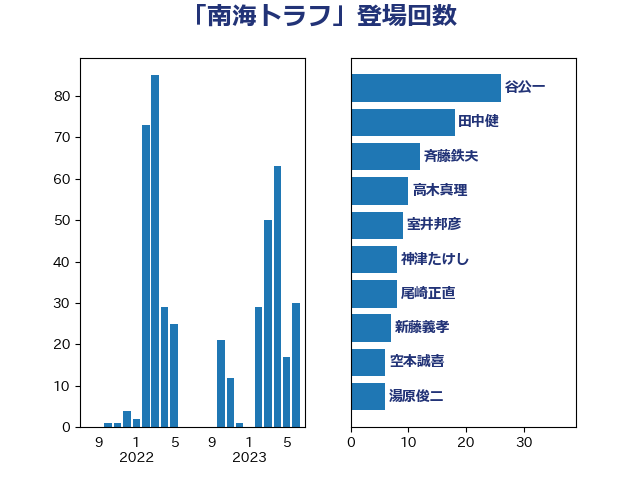

単語「南海トラフ」

| 谷公一 | 自由民主党 | 26 回 |
| 田中健 | 国民民主党 | 18 回 |
| 斉藤鉄夫 | 公明党 | 12 回 |
| 高木真理 | 立憲民主党 | 10 回 |
| 室井邦彦 | 日本維新の会 | 9 回 |
| 神津たけし | 立憲民主党 | 8 回 |
| 尾崎正直 | 自由民主党 | 8 回 |
| 新藤義孝 | 自由民主党 | 7 回 |
| 空本誠喜 | 日本維新の会 | 6 回 |
| 湯原俊二 | 立憲民主党 | 6 回 |
| 小里泰弘 | 自由民主党 | 6 回 |
| 塩田博昭 | 公明党 | 6 回 |
| 輿水恵一 | 公明党 | 5 回 |
| 渡辺周 | 立憲民主党 | 5 回 |
| 永岡桂子 | 自由民主党 | 5 回 |
| 根本幸典 | 自由民主党 | 5 回 |
| 岸田文雄 | 自由民主党 | 5 回 |
| 岬麻紀 | 日本維新の会 | 5 回 |
| 古川元久 | 国民民主党 | 5 回 |
| 梶原大介 | 自由民主党 | 4 回 |
| 早坂敦 | 日本維新の会 | 4 回 |
| 山崎正恭 | 公明党 | 4 回 |
| 塩崎彰久 | 自由民主党 | 4 回 |
| 辻元清美 | 立憲民主党 | 3 回 |
| 横沢高徳 | 立憲民主党 | 3 回 |
| 山谷えり子 | 自由民主党 | 3 回 |
| 小山展弘 | 立憲民主党 | 3 回 |
| 小寺裕雄 | 自由民主党 | 3 回 |
| 吉田宣弘 | 公明党 | 3 回 |
| 北神圭朗 | 無所属 | 3 回 |
| 中川康洋 | 公明党 | 3 回 |
| 高橋英明 | 日本維新の会 | 2 回 |
| 高橋千鶴子 | 日本共産党 | 2 回 |
| 階猛 | 立憲民主党 | 2 回 |
| 長浜博行 | 無所属 | 2 回 |
| 鈴木宗男 | 日本維新の会 | 2 回 |
| 鈴木俊一 | 自由民主党 | 2 回 |
| 足立敏之 | 自由民主党 | 2 回 |
| 谷田川元 | 立憲民主党 | 2 回 |
| 萩生田光一 | 自由民主党 | 2 回 |
| 舩後靖彦 | れいわ新選組 | 2 回 |
| 舞立昇治 | 自由民主党 | 2 回 |
| 穀田恵二 | 日本共産党 | 2 回 |
| 沢田良 | 日本維新の会 | 2 回 |
| 櫻井充 | 自由民主党 | 2 回 |
| 平将明 | 自由民主党 | 2 回 |
| 工藤彰三 | 自由民主党 | 2 回 |
| 川崎ひでと | 自由民主党 | 2 回 |
| 岸真紀子 | 立憲民主党 | 2 回 |
| 岩谷良平 | 日本維新の会 | 2 回 |
| 山本太郎 | れいわ新選組 | 2 回 |
| 小野泰輔 | 日本維新の会 | 2 回 |
| 小西洋之 | 立憲民主党 | 2 回 |
| 大野泰正 | 自由民主党 | 2 回 |
| 大口善徳 | 公明党 | 2 回 |
| 北側一雄 | 公明党 | 2 回 |
| 住吉寛紀 | 日本維新の会 | 2 回 |
| 中西祐介 | 自由民主党 | 2 回 |
| 高橋光男 | 公明党 | 1 回 |
| 馬場伸幸 | 日本維新の会 | 1 回 |
| 長坂康正 | 自由民主党 | 1 回 |
| 長友慎治 | 国民民主党 | 1 回 |
| 鈴木英敬 | 自由民主党 | 1 回 |
| 鈴木敦 | 国民民主党 | 1 回 |
| 野田国義 | 立憲民主党 | 1 回 |
| 重徳和彦 | 立憲民主党 | 1 回 |
| 西田昌司 | 自由民主党 | 1 回 |
| 菅家一郎 | 自由民主党 | 1 回 |
| 美延映夫 | 日本維新の会 | 1 回 |
| 稲田朋美 | 自由民主党 | 1 回 |
| 秋葉賢也 | 自由民主党 | 1 回 |
| 石原正敬 | 自由民主党 | 1 回 |
| 石井苗子 | 日本維新の会 | 1 回 |
| 石井準一 | 自由民主党 | 1 回 |
| 白石洋一 | 立憲民主党 | 1 回 |
| 田野瀬太道 | 無所属 | 1 回 |
| 田村貴昭 | 日本共産党 | 1 回 |
| 玉木雄一郎 | 国民民主党 | 1 回 |
| 瀬戸隆一 | 自由民主党 | 1 回 |
| 浜田聡 | NHK党 | 1 回 |
| 津島淳 | 自由民主党 | 1 回 |
| 河西宏一 | 公明党 | 1 回 |
| 武部新 | 自由民主党 | 1 回 |
| 櫛渕万里 | れいわ新選組 | 1 回 |
| 横山信一 | 公明党 | 1 回 |
| 柴田巧 | 日本維新の会 | 1 回 |
| 松本剛明 | 自由民主党 | 1 回 |
| 掘井健智 | 日本維新の会 | 1 回 |
| 庄子賢一 | 公明党 | 1 回 |
| 岩本剛人 | 自由民主党 | 1 回 |
| 山本博司 | 公明党 | 1 回 |
| 山本佐知子 | 自由民主党 | 1 回 |
| 山崎誠 | 立憲民主党 | 1 回 |
| 山口那津男 | 公明党 | 1 回 |
| 小熊慎司 | 立憲民主党 | 1 回 |
| 小泉龍司 | 自由民主党 | 1 回 |
| 小林一大 | 自由民主党 | 1 回 |
| 小宮山泰子 | 立憲民主党 | 1 回 |
| 寺田静 | 無所属 | 1 回 |
| 宮崎勝 | 公明党 | 1 回 |
| 安江伸夫 | 公明党 | 1 回 |
| 奥下剛光 | 日本維新の会 | 1 回 |
| 大野敬太郎 | 自由民主党 | 1 回 |
| 大西健介 | 立憲民主党 | 1 回 |
| 大塚耕平 | 国民民主党 | 1 回 |
| 吉田久美子 | 公明党 | 1 回 |
| 吉井章 | 自由民主党 | 1 回 |
| 務台俊介 | 自由民主党 | 1 回 |
| 加藤勝信 | 自由民主党 | 1 回 |
| 加田裕之 | 自由民主党 | 1 回 |
| 前川清成 | 日本維新の会 | 1 回 |
| 仁木博文 | 無所属 | 1 回 |
| 井上哲士 | 日本共産党 | 1 回 |
| 中野洋昌 | 公明党 | 1 回 |
| 中川郁子 | 自由民主党 | 1 回 |
| 中川宏昌 | 公明党 | 1 回 |
| 下野六太 | 公明党 | 1 回 |
| 下村博文 | 自由民主党 | 1 回 |
| 三木圭恵 | 日本維新の会 | 1 回 |
| 三宅伸吾 | 自由民主党 | 1 回 |
| ながえ孝子 | 無所属 | 1 回 |
| おおつき紅葉 | 立憲民主党 | 1 回 |